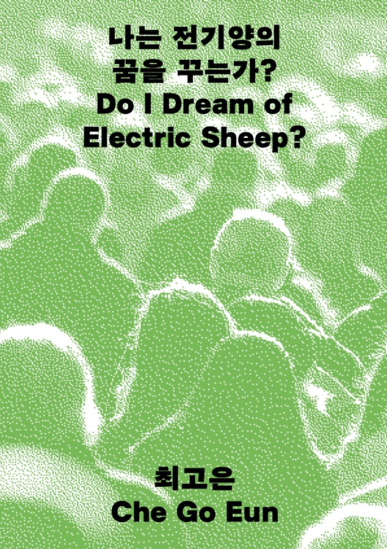
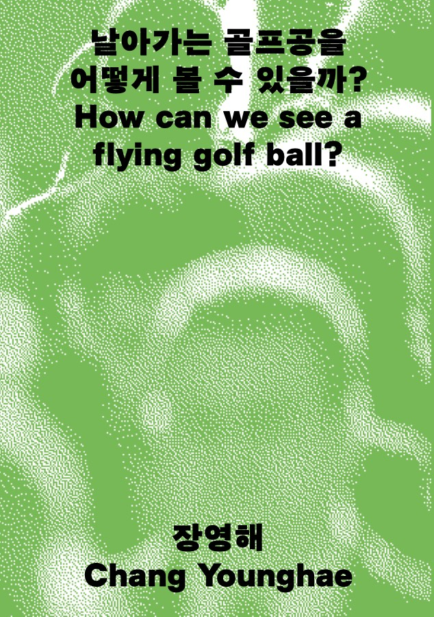
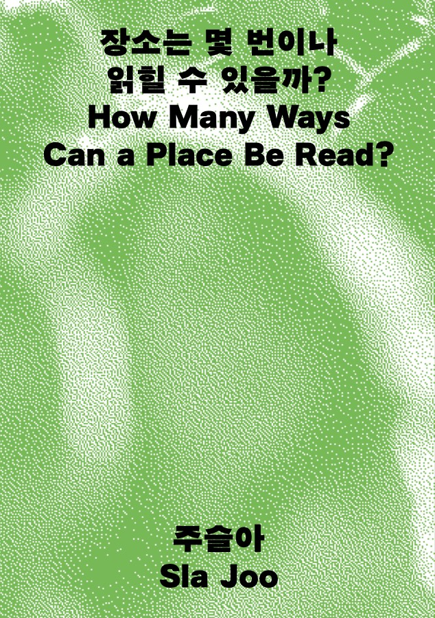
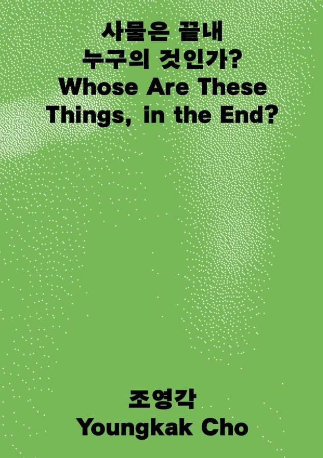
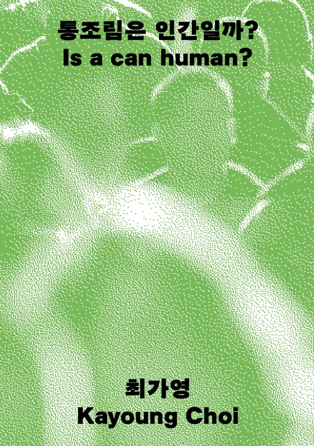
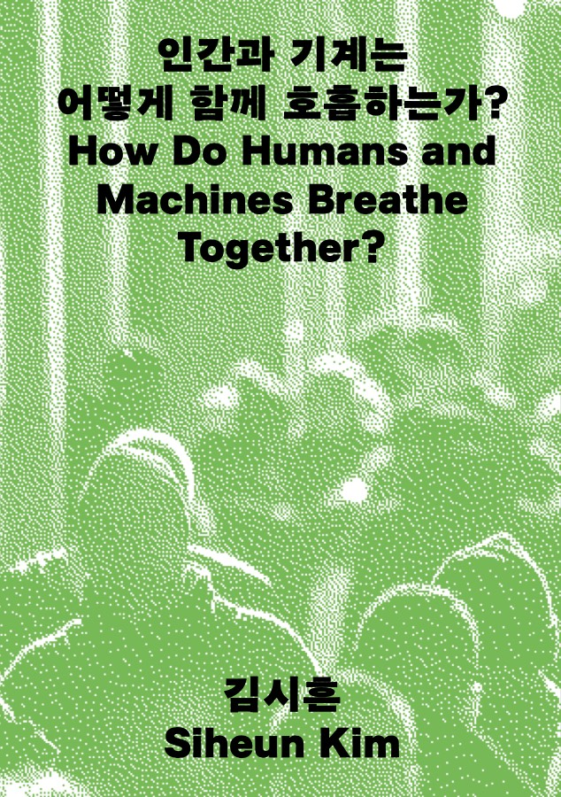
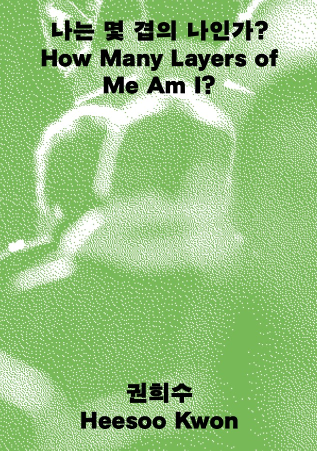
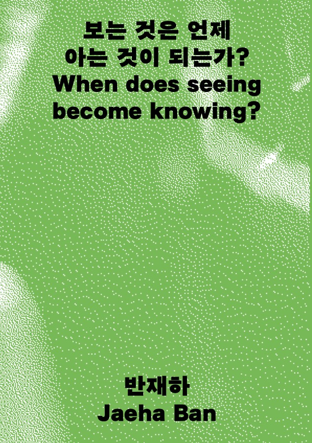
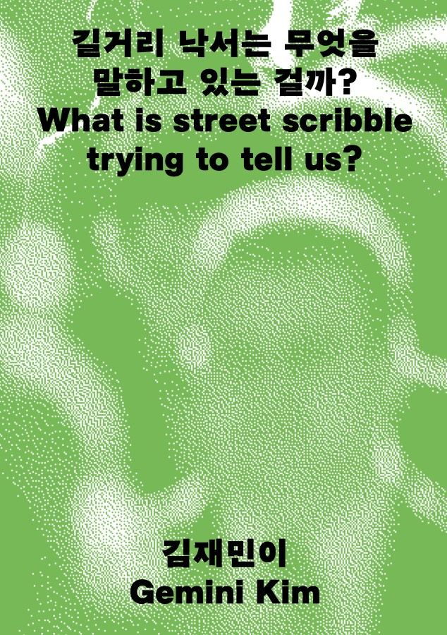

2026. 9. 1(화) – 9. 20(일) · 12:00–20:00 월요일 휴관(9/7·9/14) · 무료 관람 서울시 영등포구 문래동2가 21-6 (종도빌딩 1층)
전시를 준비하며 작가들은 각자의 리서치 과정에서 도출된 질문과 생각의 변화, 주요 논의를 연구노트에 기록해 왔습니다. 각 노트는 하나의 질문에서 출발합니다 — 표지를 눌러 노트를 받아 보세요.









Read more를 누르면 연구노트 PDF가 내려받아집니다. 전시장에도 실물 연구노트가 비치되어 있습니다.